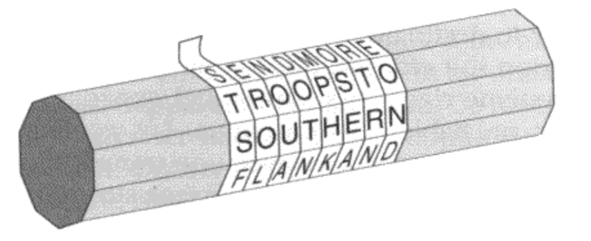
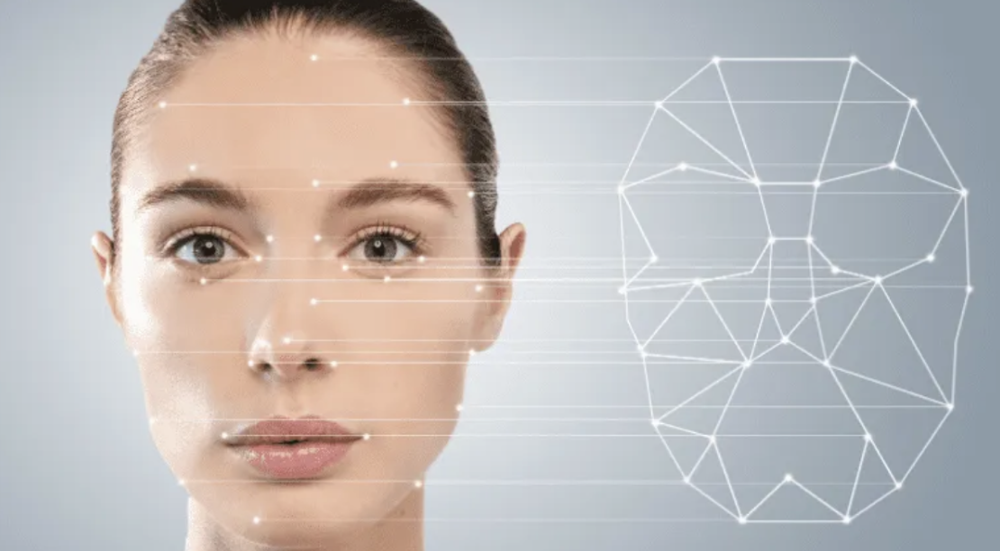

Encryption: The first lock
Encryption does not only involve unscrambling information. In order to access its contents, the person intercepting the message should first have the key. One of the earliest forms of encryption is the scytale device used by ancient Spartians to relay war commands secretly. The scytale delivers messages by wrapping a strip of leather around a uniquely shaped wooden rod only known by the intended recipient. When unwrapped only an anagram with meaningless letters are observed, this is the idea behind ciphertext. However, since no lock ever remains unpicked, the frequency analysis system which Islamic scholars used to unravel the Quran was able to piece together cryptography methods such as the scytale device. Frequency analysis relies on the statistical frequency of a letter within a language. For instance, in 2020, ‘E’ is recorded to appear in 10.98% of words, ‘I’ in 9.08% and S in 8.89%. Hence the Islamic scholars would assume that the most common letter in an encrypted message would be E. However, this method of decryption does have its weaknesses. The message “yacht and xylophones” contains the least frequent letters ‘y’ and ‘x’. The caesar cypher relies on shifting letters to infrequent ones with a key code agreed between the sender and recipient. This ultimately started the perpetual battle between encryption and decryption.

Source: Scytale Cipher - CacheSleuth
Data breaching: Picking the Locks
It is easy to understand that it is far more easy to make than to break locks. However, does this mean that encryption should only be a concern after a cryptology method has been deciphered? Absolutely not. Neither we nor Influential companies would entrust confidential information to our computers if we are aware that third parties could eavesdrop into secrets at any moment. This is why even though quantum hacking still remains as a threat of the distant future, we must search for a way to stall or overcome this ‘cyberspace doomsday’. Currently, the mission for the ‘lock makers’ is to be solving the common ‘picking’ problem instead of a rare situation when the attacker breaks the entire lock. For instance, it would be more beneficial for cybersecurity analysts to strengthen the security of hashing than to solve data breaches through brute force, since brute force attacks, while unpredictable, are unlikely to succeed. But what happens if the speed of computers continues to increase? This would allow trillions of passwords to be guessed in a millisecond. Will passwords become useless anytime soon?
Future of passwords
Now this begs the question, will our ‘secrets’ soon have no place to hide? Perhaps, but quantum hacking currently faces a problem that can’t be addressed in the near future. Quantum computers are incredibly expensive to maintain as to retain the ability for these computers to store ‘0’s and ‘1’s simultaneously, quantum computers should be kept at near absolute-zero temperatures. The energy (heat) generated when testing possibilities of passwords causes qubits (bits which store 0s and 1s simultaneously) to resolve at a definite state. This means that (currently) quantum computers still require an impractical duration of time to brute force possibilities of passwords. This means that in the near future, passwords will be required to be longer and more complex. Instead of relying on people like us to remember an essay for a password, more complex means of encryption will be integrated within fingerprints and face recognition (biometrics). This is why Google is introducing a ‘future without passwords’ (passwords that are challenging for a human to remember and guess are currently deterring computers as well). Hence, in the near future, passwords will be made more secure and convenient as a glance at our phones will keep the secret safe.

Source: Facial Recognition - Visage Technologies